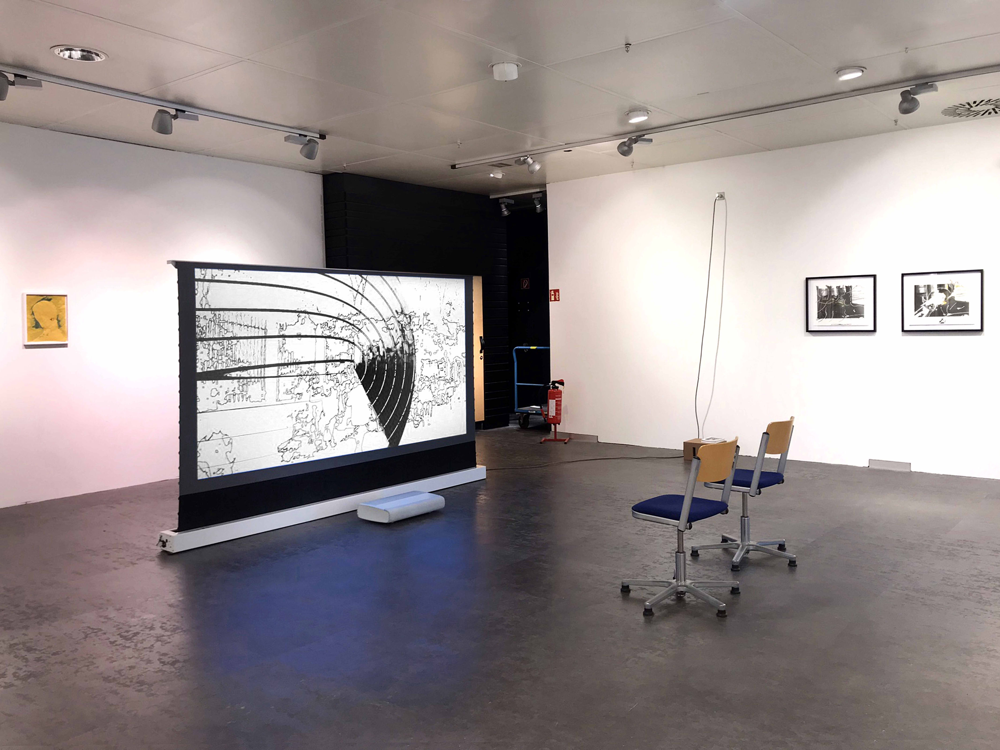
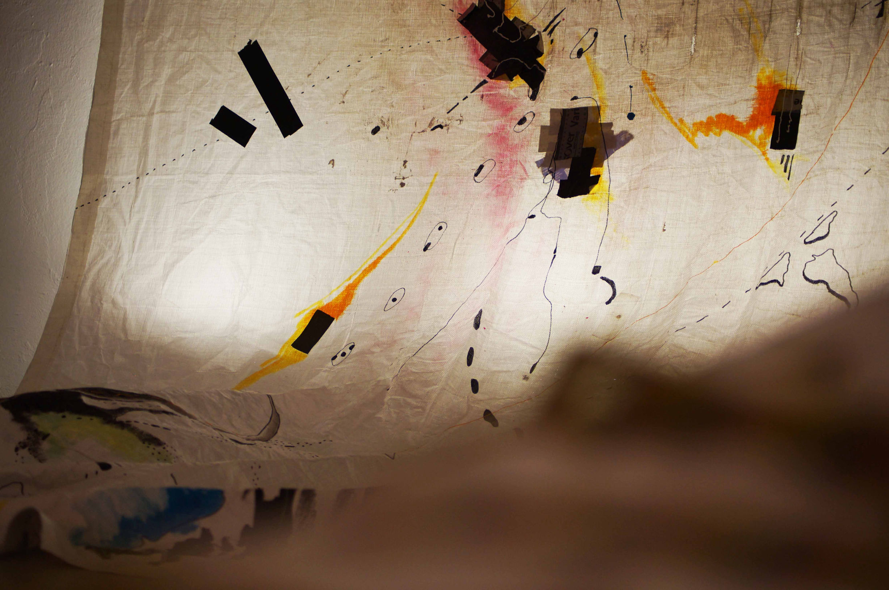
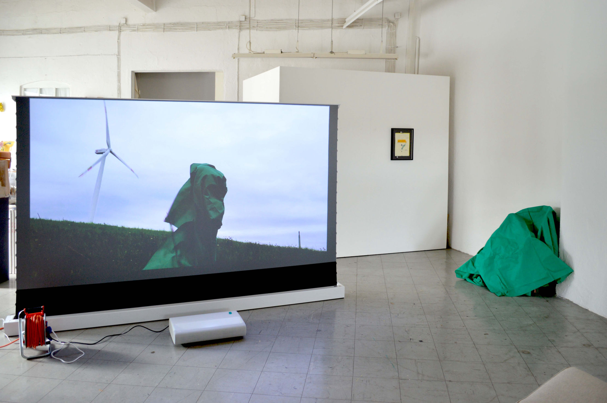
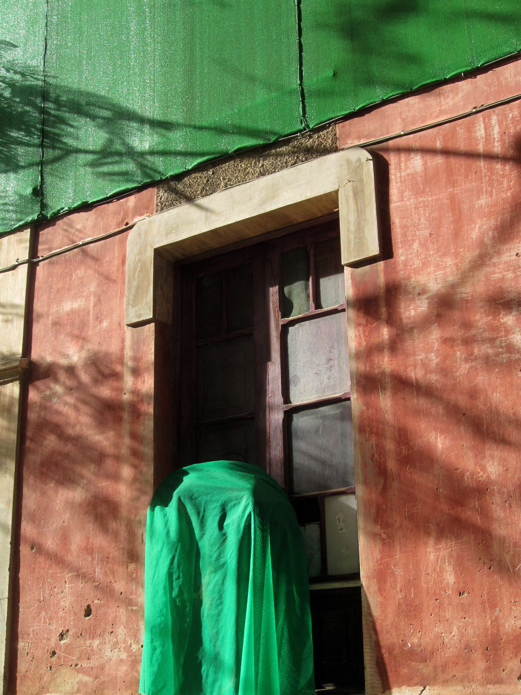
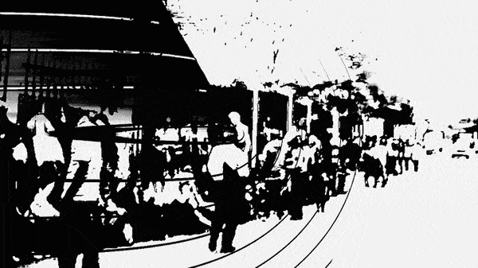
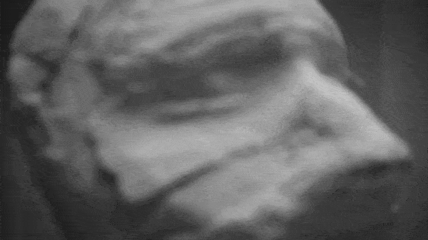
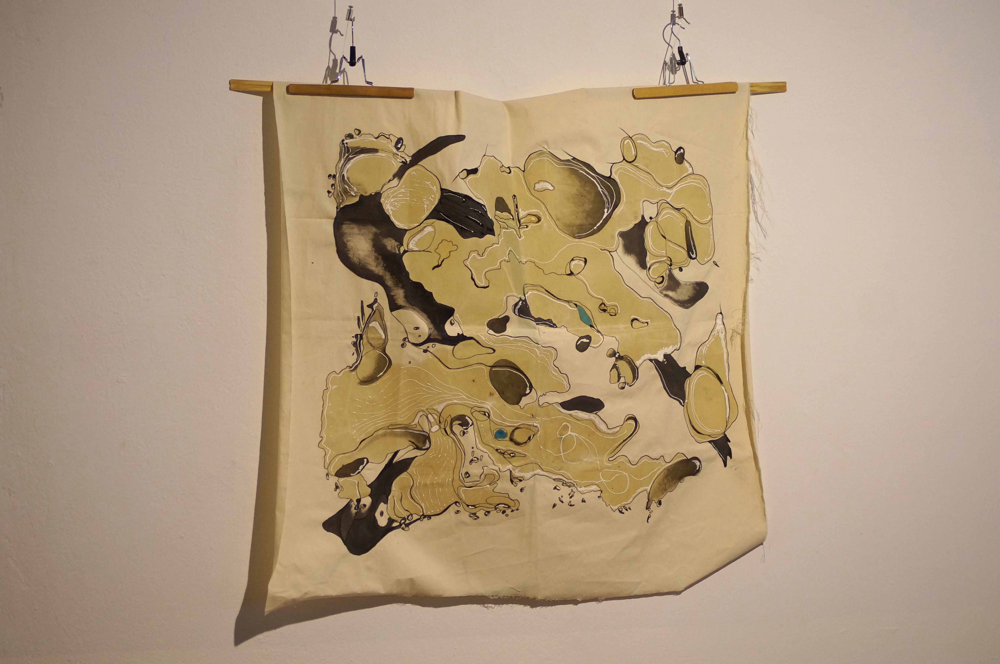

ARNALDO DRÉS
GONZÁLEZ
works
selected works
chronological list
projects
exhibitions
texts
excerpts
publications
info
bio
statesment
cv
press
publications
contact
html templates

Radar, 2023
Single-channel video, black and white, sound, 09'34¨, loop.
Poética al Resguardo: Del Polvo y el Aire, mi Abuela y un Molino, 2023
Poetics to the Shelter: From Dust and Air, my Grandmother and a Mill.
Video, digital photography, sound, installation.
El Hallazgo, 2022
The Finding / Die Entdeckung
Single-channel video, black and white, sound.
Sobre la Mina, 2022
Above the Mine / Über der Mine
Single-channel video, color, sound, 14'16¨, loop.

Lonas del Jardín, 2022 / 2021
Garden Tarps / Gartenplane
Drawing, Painting, Objects, Installation.
Rastros, 2022
Traces / Spuren
Mixed media on found canvas
(pencil, ballpoint pen, marker, coffee)
(3x) 50 x 50 cm.
Diasporados, 2021/2018
Diasporated / Diasporiert
Mixed media on found printed paper and alu-dibond.

Sobre la Basura, 2015
Über den Müll / Over Trash
Single-channel video, color, loop.
Performance filmed in the Energieberg Georgswerder, Hamburg, Germany.


Radar
Mobile-freundlich


© 2024 Arnaldo Drés González |
Imprint
|
Privacy Policy


")
")
")
")
")
")
")
")
")

")
")
")
")